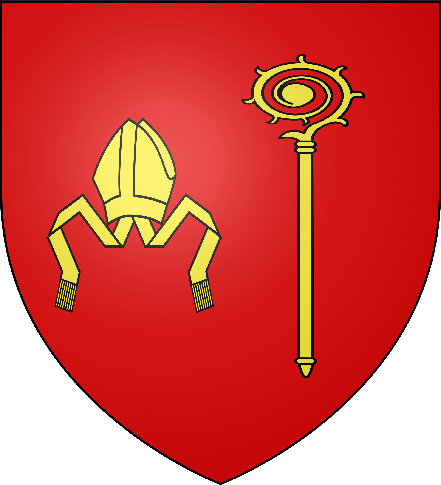
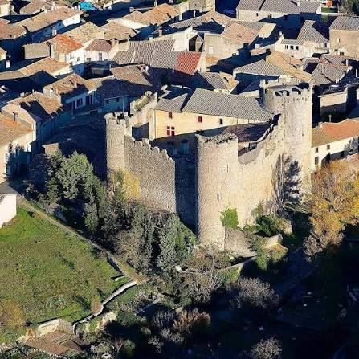

Villerouge
-TermenèsLe château du dernier « Parfait » cathare


⟹ Sites Emblématiques ⟸

Porte méridionale des Hautes-Corbières, le château de Villerouge-Termenès trouve ses origines à la fin du XIᵉ siècle. Dès 1110, il devient la propriété des archevêques de Narbonne, qui en font le siège d'une de leurs onze « baylies » — un centre administratif chargé de percevoir dîmes et taxes sur le territoire environnant.

Le château entre dans l'histoire pour un épisode tragique : le 24 août 1321, Guilhem Bélibaste, considéré comme le dernier « bon homme » — ou Parfait — cathare occitan connu, y est brûlé vif sur ordre de l'archevêque Bernard de Farges. Traqué, trahi puis capturé, celui qui fut berger avant de devenir prédicateur cathare clandestin incarne la fin d'un siècle de résistance religieuse dans le Languedoc.
Fortifié aux XIIIᵉ et XIVᵉ siècles, le château appartient aux archevêques de Narbonne jusqu'à la Révolution. Tombé en ruines, il fait l'objet d'une restauration complète qui lui a rendu son allure de puissante forteresse d'architecture militaire médiévale.
Villerouge-Termenès s'inscrit au cœur des Hautes-Corbières, un territoire de collines sèches, de garrigue et de vignobles qui annonce, plus au sud, les premiers contreforts du massif des Corbières orientales et les sites cathares perchés de Termes et Peyrepertuse.
Implanté en plaine et non sur un piton rocheux, le château de Villerouge-Termenès tranche avec les forteresses perchées voisines, tout en conservant la puissance défensive propre aux places fortes cathares.
— Réseau Pays CathareLe village, entouré de vignes des Corbières, offre un cadre paisible où se mêlent viticulture, garrigue parfumée de thym et de romarin, et silence des grands espaces. Un territoire encore peu fréquenté qui a su préserver son authenticité rurale.
Château de Termes forteresse perchée emblématique de la croisade contre les Albigeois, à une vingtaine de minutes.
Château de Peyrepertuse l'un des plus vastes châteaux cathares, dominant la vallée depuis sa crête vertigineuse.
Lagrasse Plus Beau Village de France et son abbaye bénédictine, à proximité dans les Corbières.
Villages viticoles des Corbières Boutenac et son AOC, entre caves et paysages de vignes.